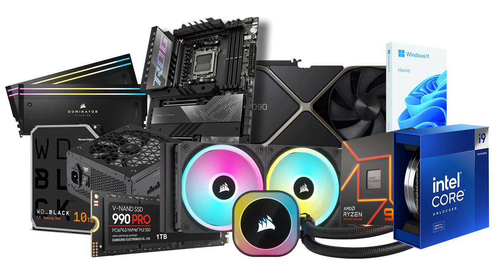

This has been the debate almost everyone has been talking about for a while now. Not to be biased
but, I am a PC gamer, so I do prefer it. But in this debate, there is clear advantages and disadvantages
of both sides. Are you a just a chill and casual gamer that plays on your switch? Are you a Xbox
fanboy? Does the PS5's exclusives really shine in your mind? Or does the more well rounded, diverse
customisable PC market highlight your priorities.
Consoles:
Budget:
Budget is very important factor when you're buying something to game with. it might even be the
BIGGEST factor depending on your priorities. Both console and PC have good budgeting options.
For example, you can get a brand new switch for under $3,000 dollars.
The switch is a great example for a pretty budget consoleFor example, you can get a brand new switch
for under $2,000 dollars, nd a switch lite for $1,000!that is a very competive price, and you can
definitely get it for around $500-$700 second hand. And even the switch OLED which is mean't to be
the high end of the switch is less than $3,000.
The playstation market also has it's pretty good budgeting options. The regular PS5 is around
$3,700 and the PS5 pro is $5,390. Yeah, those definately aren't the budget friendly options
(DEFINATELY NOT THE PS5 PRO). But the PS5 slim is slightly better. And if you are on a tight
budget
Xbox has a little problem though. The Xbox series X can't really compete to the PS5 series, like the
Xbox series X is way too expensive for too little power, the desing isn't nearly as cool as the PS5,
And Xbox exclusives aren't really exclusives because you can litterally play Halo on the Play station.
The Xbox series S has a better price point but it still isn't cool as the PS5.
Advantages of Consoles
Consoles are very popular. I mean, it makes sense, they are very easy to get started with and
generally, actually cost less than PC. And newer consoles can be a TV box.
I think that we can also agree that console multiplayer is just much better than what PC has to
offer. Consoles are mostly set up for multiplayer games.
PC

Budget:
Unlike consoles, PC just has a range. And it is better if you want the cheapest possible option,
the most expensive, and the middle range, anythign you can think of and inbetween. You can find
a good PC for like $2000 and you can use that for not just gaming, PC is not just a gaming device.
So your getting more bang for your buck with PC.
Advantages of PC
PC is great because you can customize the hardware. Until tell me when you can change the CPU
on your PS5. With PC, you can choose where, when and how you want to invest in your computer.
And you can just gradually upgrade your computer, swapping out the GPU, CPU, SSD every few YEARS
can get your PC up to date even if it was bought like 7 years ago.
Lots of gamers are thinkig about how much will it cost for the PC itself. But they don't really
factor in the fact that PC games are way cheaper than their console specific versions. Not to
mention a lot of games are completely free. Think about Roblox!